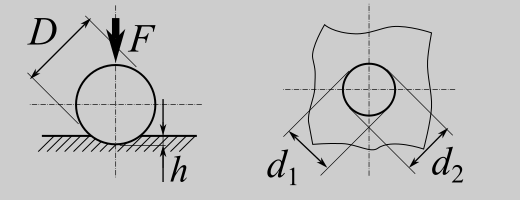
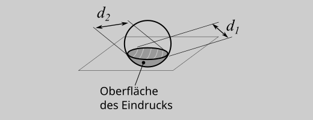
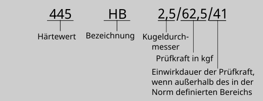

2. Brinell#
2.1. Übersicht Prüfung#
DIN EN ISO 6507-1:2015-02 |
|
|---|---|
Glatte ebene Prüffläche, Mindestdicke \(8\cdot\textit{Eindringtiefe}\) |
|
Eindringkörper |
Kugel mit \(D=1; 2,5; 5; 10 \text{ mm}\) aus Hartmetall (früher auch gehärteter Stahl) |
Je nach Werkstoff und Kugeldurchmesser zwischen 9,807 N und 29,420 kN, definiert über den Beanspruchungsgrad |
|
Position Eindruck |
(fast) frei wählbar; Rand und Lochabstände beachten (vgl. DIN EN ISO 6507-1 Abschn. 8.8) |
Ablauf |
1. belasten in \(7^{+1}_{-5}\) s, 2. halten (Einwirkdauer) \(14^{+1}_{-4}\) s (bei abweichender Zeit mit anzugeben), 3. komplett entlasten |
Eindruckdiagonalen \(d_1\) und \(d_2\) |
|
Brinell-Härte \(= 0,102\cdot\frac{2F}{\pi{} D^2(1-\sqrt{1-d^2/D^2})}\), \(F\) in N, \(d=\frac{d_1+d_2}{2}\) in mm |
|
Zahlenwert HBW Kugeldurchmesser / Prüfkraft in kgf / ggf. Haltezeit in s, z.B. 133 HBW 1/30/20, 120 HBW 2,5/62,5 |
2.2. Prüfkörper#
Die Prüfung muss an einer glatten une ebenen Oberflächer vorgenommen werden. Die Dicke der Probe muss mindestens das 8-Fache der Eindringtiefe \(h\) betragen.
\(\textit{Mindestdicke}=8\cdot h=8\cdot\frac{D}{2}(1-\sqrt{1-d^2/D^2})\)
Kann der Härtewert geshätzt werden, kann die Eindruckdiagonale \(d\) aus der Gelichung für die Härteberechnung zurückgerechnet und so die Mndestdicke abgeschätzt werden.
2.3. Prüfkräfte#
Die Prüfkräfte sind so zu wählen, dass der Eindruckdurchmesser zwischen den Werten 0,24 D 0,6 D liegt. Dies wird i.A. durch die Wahl der Prüfkraft anhand des Beanspruchungsgrades \((=0,102\cdot F/D^2)\) erreicht, der für bestimmte Härteniveaus bzw. typische Werkstoffe in der DIN EN ISO 6506-1 definiert ist:
Werkstoff |
Brinellhärte |
Beanspruchungsgrad |
|---|---|---|
Stahl, Nickel- und Titanleg. |
30 |
|
Gusseisen |
\(<140\) |
10 |
\(\geq140\) |
30 |
|
Kupfer, -legierungen |
\(<35\) |
5 |
\(35\) bis \(200\) |
10 |
|
>\(200\) |
30 |
|
Leitmetalle, -legierungen |
\(<35\) |
2,5 |
\(35\) bis \(80\) / >\(80\) |
5/10/15 |
|
>\(80\) |
10/15 |
|
Blei, Zinn |
1 |
Für einen einen Kugeldurchmesser von \(D=2,5\text{ mm}\) ergeben sich damit je nach Beanspruchungsgrad über die Gleichung
\(F=\frac{\text{Beanspruchungsgrad}\cdot D^2}{0,102}\)
die folgenden Prüfkräfte
Symbol Härte |
Beanspruchungsgrad |
Prüfkraft in N |
|---|---|---|
HBW 2,5/187,5 |
30 |
\(1839\) |
HBW 2,5/62,5 |
10 |
\(612,9\) |
HBW 2,5/31,25 |
5 |
\(306,5\) |
HBW 2,5/15,625 |
2,5 |
\(153,2\) |
HBW 2,5/6,25 |
1 |
\(61,29\) |
2.4. Ausmessen des Eindrucks#
Zur Bewertung des plastischen Eindrucks ist der Durchmesser des Eindrucks in zwei etwas senkrecht zueinander liegenden Richtungen zu messen.

2.5. Berechnung des Härtewertes#
Der Härtewert ergibt sich aus der Prüfkraft \(F\) und der Oberfläche des Eindrucks \(A_{D}\). Die Berechnung der Oberfläche des Eindrucks ergibt sich über das “eingedrungene” Kugelsement, über die mittlere gemessene Eindruckhdiagonale
\(d=\frac{d_1+d_2}{2}\)

Mit der Oberfläche des Kugelsegments
\(A_D=\frac{\pi D}{2}(D-\sqrt(D^2-d^2)\)
ergibt sich der Härtewert
\( \textit{Brinell-Härtewert} = 0,102\frac{2F}{\pi D(D-\sqrt{D^2-d^2})} \) mit \(F\) in N und \(d\) in mm
Der berechnete Wert wird der Härteskala zugeordnet und ist ein reiner Zahlenwert ohne Dimension. Da die Brinell-Härteskala bereits zu beginn des 20. Jahrhunderts entwickelt wurde, hat ist mit den alten Härtewerten die alte Krafteinheit \(kp=kgf\) (Kilopond) verbunden. Die Umrechnung erfolgt über die Erdbeschleunigung \(g_n\):
\([F]=1 \text{N} = g_{n} \cdot 1 \text{kp}\) mit \(g_{n}= 9,80665 \frac{\text{m}}{\text{s}^2}\)
Hieraus resultirt der Faktor \(0,102\approx1/9,80665\)
2.6. Angabe des Härtewertes#
Da die Härte ein relative Maß ist, die Maßzahlen unterschiedlicher Skalen nicht direkt vergleichbar sind und die Härtewerte von den Prüfbedingungen abhängen, ist eine korrekte Angabe des Härtewertes nach der jeweiligen Prüfnorm essentiell. Ansonsten ist der Zahlenwert nutzlos!

Der Prüfbericht muss in Anlehnung an DIN EN ISO 6506-1:2015, Absch. 9 folgende Angaben enthalten:
a) Normenverweis
b) Prbenbezeichnung zur eindeutigen Zuordnung
c) Prüfdatum
d) Prüftemperatur
e) ggf. das Verhältnis von Eindruckdruchmesser und Eindringkörperdurchmesser
f) Prüfergebnis
g) ggf. Grundlage und Verfahren der Umwertung
h) alle wesentlichen Randbedingunen der Prüfung, die nicht in der Norm festgelegt sind
i) Ereignisse oder Bedinugnen die ggf. das Prüfergebnis beeinträchtigen können